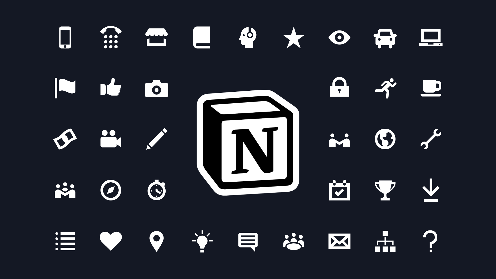

Notion: É um aplicativo de produtividade e organização que combina funcionalidades de anotações, gerenciamento de
projetos, bancos de dados e wikis. Permite aos usuários criar e personalizar espaços de trabalho para organizar
informações, tarefas e colaboração.
